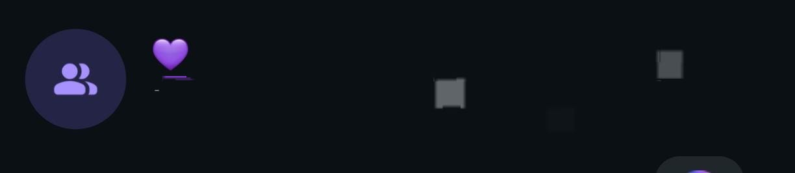
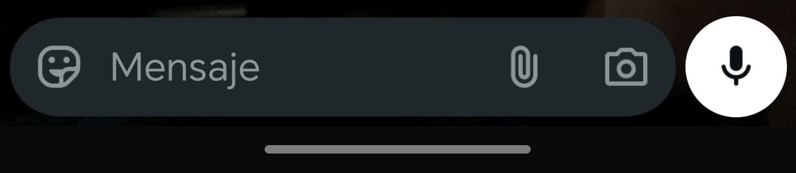
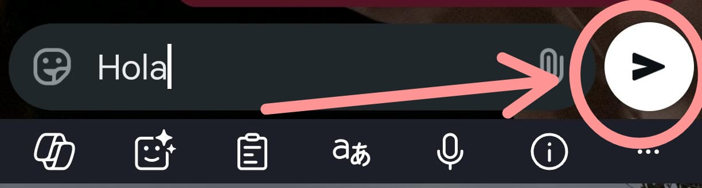

- 1️. Abra la aplicación WhatsApp.
- 2️. Seleccione el contacto.
- 3️. Toque donde dice “Escribir mensaje”.
- 4️. Escriba su mensaje.
- 5️. Presione el botón de enviar.



Pasos para enviar un mensaje


